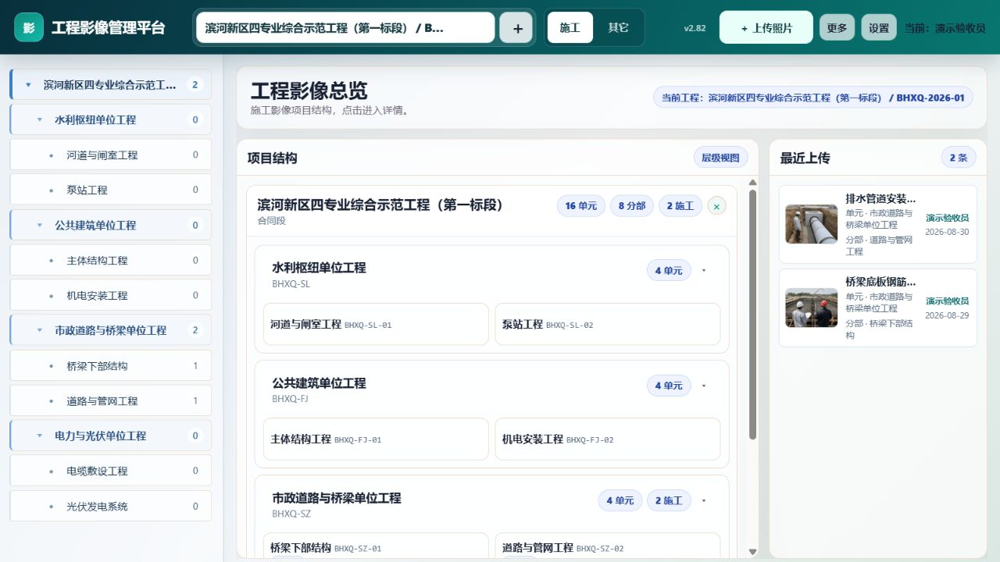
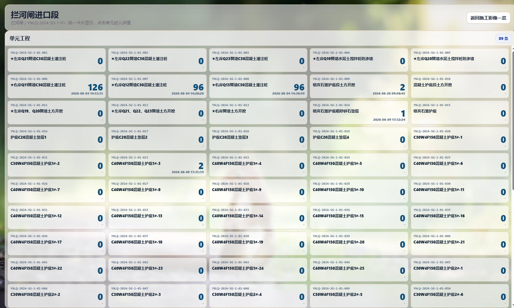
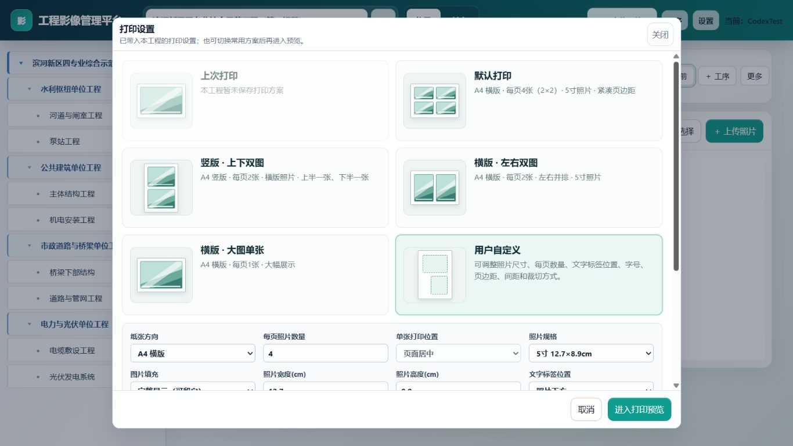
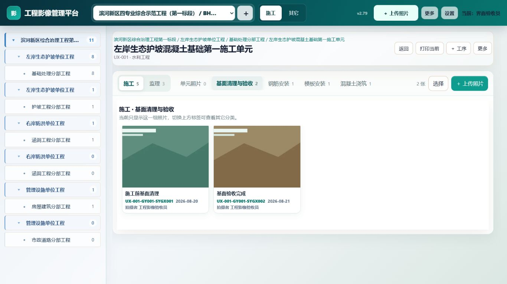
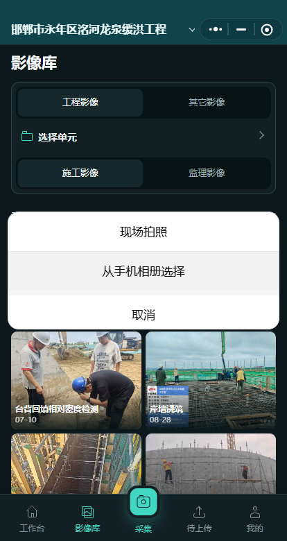

建工程
独立工程容器，设专业与删除密码；项目划分可模板导入。
Windows · 小程序 · 局域网
为水利、房建、市政、电力现场设计的影像管理工具：采集带水印、按项目归档、批量打印与导出。免费可用 1000 张，需要时再升级。

真实软件界面 · 非效果图
工作流
不堆功能名词。按你每天会做的事排列。
独立工程容器，设专业与删除密码；项目划分可模板导入。
现场水印拍照或文件夹上传，支持自动匹配与待分类。
按单位工程与工序归位，编号规则统一，便于复查。
单张 / 批量打印与统计导出，交付资料一次备齐。
能力摘要
桌面端管主数据；小程序补现场；局域网给同项目组协作。
水印拍照、批量上传、自动匹配项目编码，减少手工改名。
工程 → 单位工程 → 工序层级清晰，待分类入口消化漏网照片。
按规范版式打印；统计表与工程包导出，方便存档移交。
现场补拍与同步；绑定工程后与桌面主库对齐。
同网段共享服务入口，适合驻场机房与监理办公室。
云账号登录、工程删除密码、成员邀请，降低串号与误删。
专业适配
专业差异体现在采集清单与模板，而不是换一套软件。卡片内为统一线稿示意，无现场照片拼贴。

产品界面
工作台、上传、打印同一视觉语言，降低学习成本。

文件夹上传、预览匹配后再提交。

单张与批量打印，版式稳定。

结构树清晰，定位快。
微信小程序
电脑上建好工程并绑定同一个云账号后，现场人员用微信打开小程序。照片先留在手机队列里，网络恢复后再上传。
